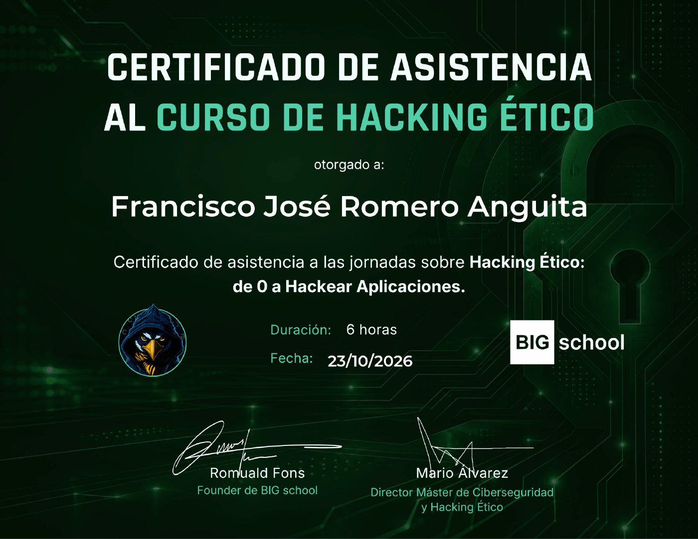
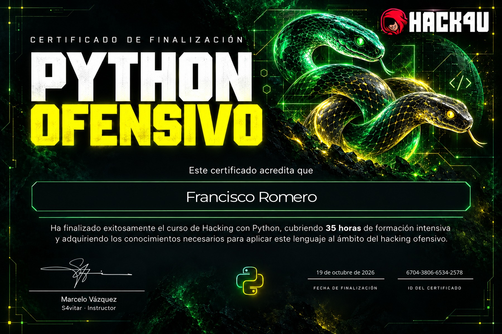
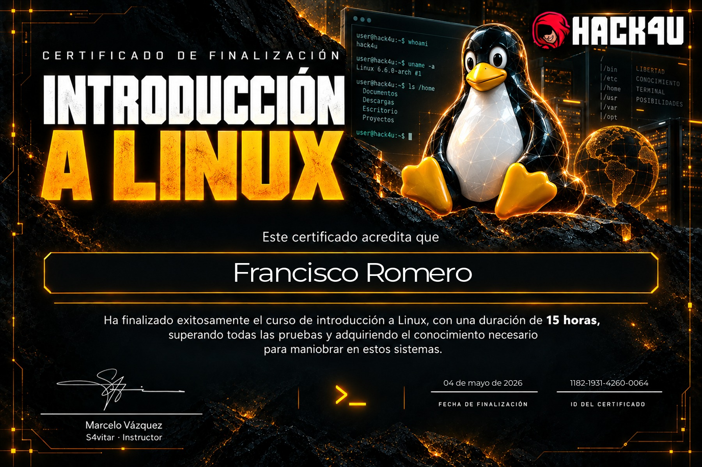
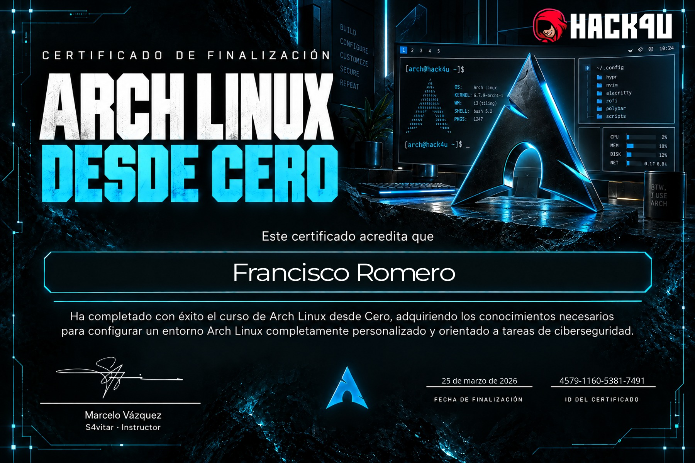
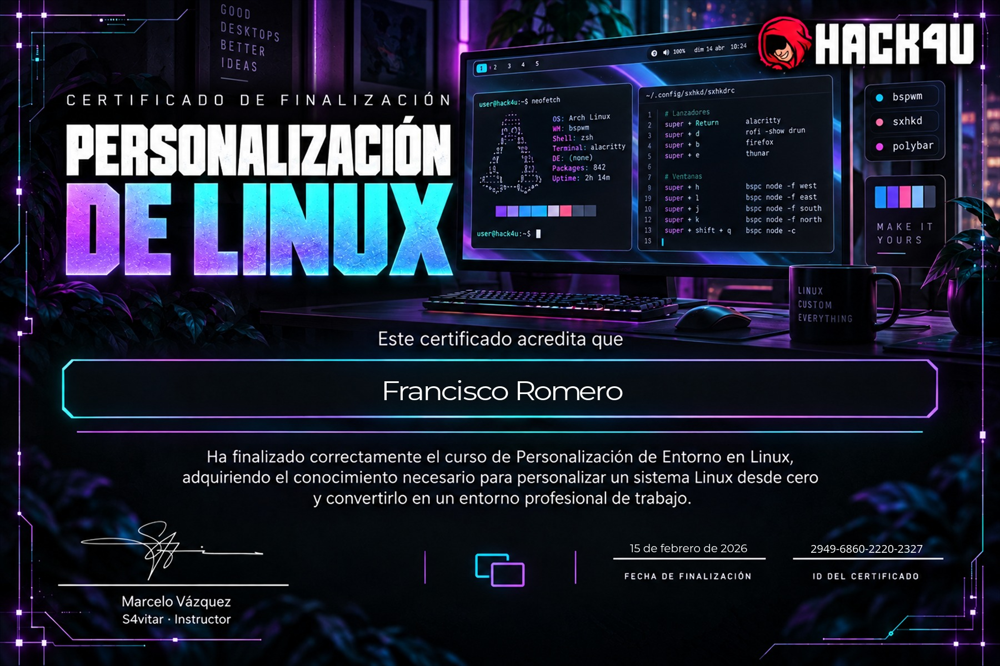

BIG school · Certificado de asistencia
Hacking ético: de 0 a Hackear Aplicaciones
23 de octubre de 2026 · 6 horas
Ver certificado (PDF) ↗INTELIGENCIA ARTIFICIAL & CIBERSEGURIDAD
Soy Francisco José Romero Anguita, estudiante en la Universidad de Jaén. Llevo seis años aprendiendo programación y sigo explorando la ciberseguridad cada día.
Conoce mi trayectoria01 / SOBRE MÍ
Empecé a aprender programación a los doce años. Seis años después, esa curiosidad sigue guiando mi formación en Inteligencia Artificial y Ciberseguridad en la Universidad de Jaén.
La ciberseguridad forma parte de mi aprendizaje diario. Me interesa comprender las vulnerabilidades de sistemas y aplicaciones y desarrollar los conocimientos necesarios para contribuir a su seguridad.
02 / CONOCIMIENTOS
Lenguajes y entornos con los que he aprendido a abordar problemas desde distintas perspectivas.
PROYECTO / INVESTIGACIÓN
Diseño, construcción y programación de un rover de exploración científica controlado a distancia. Un proyecto que conecta robótica, electrónica, adquisición de datos y desarrollo de software.
El informe documenta el proceso de montaje y programación, los resultados y las dificultades de alimentación, conexiones y comunicación. La navegación autónoma y la integración de inteligencia artificial se plantean como futuras líneas de trabajo.
03 / FORMACIÓN ACREDITADA
Cursos completados y jornadas a las que he asistido, con sus certificados originales.

BIG school · Certificado de asistencia
23 de octubre de 2026 · 6 horas
Ver certificado (PDF) ↗



04 / FORMACIÓN CONTINUA
Actualmente me preparo para las siguientes certificaciones, dentro de mi recorrido de aprendizaje en seguridad de sistemas y aplicaciones.
En preparación · Certificaciones aún no obtenidas
CURIOSIDAD COMO PUNTO DE PARTIDA.